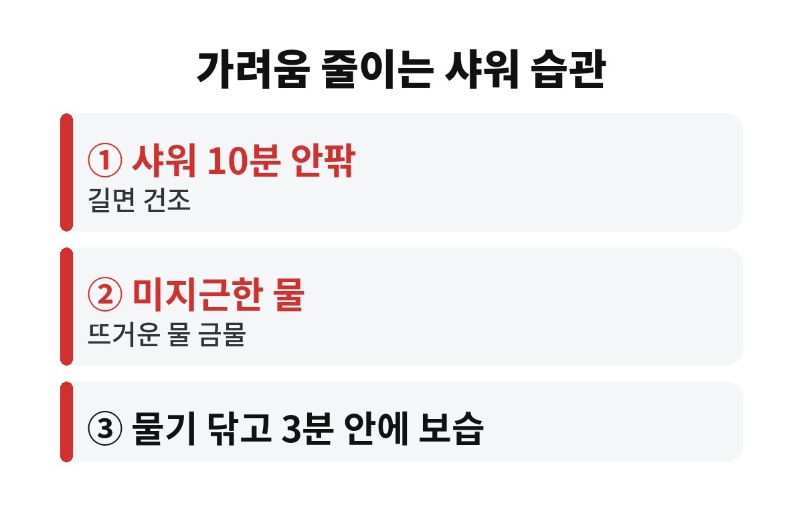

건조 가려움증은 샤워를 10분 넘게, 뜨거운 물로 오래 할수록 심해지는 경우가 많습니다. 11월 들어 몸이 자꾸 가렵다면 보습제보다 먼저 샤워 습관부터 의심해 봐야 하는데, 혹시 매일 따뜻한 물로 오래 씻고 계신가요?
날씨가 쌀쌀해지면 공기가 건조해지고 난방까지 켜니 피부 겉이 금방 푸석해져요. 피부 겉에는 수분을 붙잡아 주는 얇은 보호막이 있는데, 이 막이 약해지면 작은 자극에도 가려움이 올라옵니다. 그래서 건조 가려움증은 나이 든 분만이 아니라 직장인, 학생 할 것 없이 요즘 흔하게 겪는 고민이에요.

가장 큰 이유는 습도예요. 여름에는 공기 중 수분이 피부를 도와주지만, 가을 끝자락부터는 실내외 모두 바싹 마릅니다. 여기에 히터와 온풍기가 더해지면 피부 수분이 더 빨리 날아가죠.
또 하나는 옷이에요. 두꺼운 니트나 기모 소재가 정강이와 팔 안쪽을 계속 스치면서 자극이 쌓입니다. 특히 정강이, 팔 바깥쪽, 옆구리처럼 피지 분비가 적은 부위부터 가려운 분이 많아요. 긁으면 잠깐 시원하지만 피부 보호막이 더 상하니 악순환이 되고요.
피부과 쪽에서 흔히 권하는 기준은 샤워 10분 안팎, 미지근한 물입니다. 뜨거운 물은 개운한 느낌을 주지만 피부 기름기를 같이 씻어 내서 씻고 나면 오히려 더 당기고 가려워질 수 있어요. 한겨울 목욕탕 같은 습관은 잠시 접어 두시는 게 좋습니다.
비누나 바디워시도 거품이 풍성하고 향이 진한 것보다 순한 제품을 쓰고, 매일 온몸을 박박 문지르기보다 땀과 냄새가 나는 부위 위주로 씻어 보세요. 때수건은 이 시기엔 잠시 쉬는 걸 권해요. 이 정도만 바꿔도 건조 가려움증이 한결 줄었다는 분이 많거든요.
| 습관 | 이렇게 바꿔 보세요 |
| 샤워 시간 | 10분 안팎으로 짧게 |
| 물 온도 | 뜨겁지 않은 미지근한 물 |
| 보습 타이밍 | 물기 닦고 3분 안에 |
보습제는 사 놓는 것보다 바르는 타이밍이 더 중요해요. 샤워 후 수건으로 톡톡 두드려 물기를 닦고, 피부가 아직 촉촉할 때 바로 바르면 수분을 가두는 효과가 큽니다. 시간이 지나 피부가 다 말라 버린 뒤에 바르면 효과가 확 떨어져요.
제형은 로션보다 크림이나 밤 타입이 건조한 시기엔 든든합니다. 아침저녁 하루 두 번, 가려운 부위는 낮에도 덧바르세요. 향이나 알코올 성분이 강한 제품은 오히려 자극이 될 수 있으니 성분표를 한 번 보시고요. 실내 습도는 너무 건조하지 않게 가습기나 젖은 수건으로 조금만 올려 줘도 도움이 됩니다.
생활습관을 바꿨는데도 몇 주째 낫지 않거나, 밤에 잠을 깰 정도로 가렵거나, 긁은 자리가 붉게 번지고 진물이 난다면 단순 건조가 아닐 수 있어요. 습진이나 알레르기, 드물게는 다른 질환이 숨어 있는 경우도 있어서 이럴 땐 참지 말고 피부과에서 확인받는 게 마음 편합니다.
복용 중인 약이 있거나 당뇨 같은 지병이 있는 분, 온몸이 고르게 가려운 분은 더더욱 가볍게 넘기지 마세요. 특별한 피부 변화 없이 가려움만 오래간다면 더 그렇습니다.
자, 오늘 샤워는 타이머 10분 맞추고 물 온도를 한 칸만 낮춰 보시겠어요? 며칠 뒤 가려움이 줄었는지 살펴보시고, 도움이 됐다면 구독으로 다음 건강 이야기도 챙겨 가세요.
※ 이 글은 일반적인 건강 정보이며 진단·치료를 대신하지 않습니다. 증상이 계속되면 전문의 상담을 권장합니다.